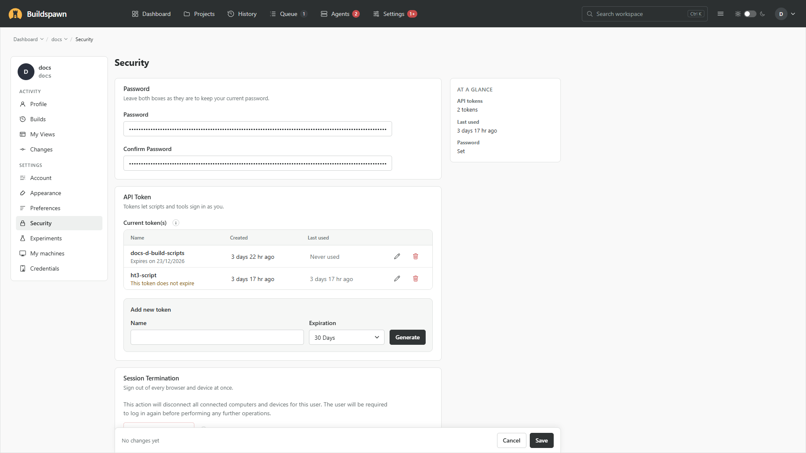
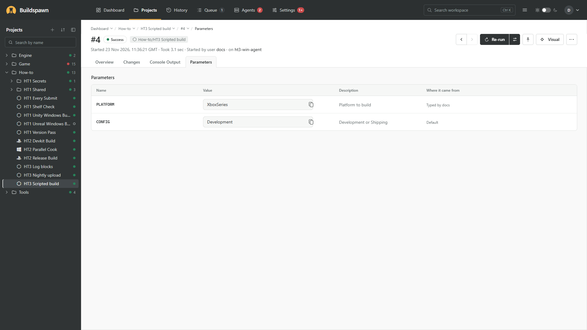

Start builds from a script
Make an API token, then start a build with parameters from curl or PowerShell, wait for it and read its result.
Before you start
- You have the Build permission on the build configuration, for example through the Developer role.
- You know the build configuration's address. Open it in the browser and copy the address, for example
http://buildserver:8080/job/How-to/job/HT3%20Scripted%20build/. Each project adds ajob/<name>/part, and spaces become%20. - You know its parameter names. They are listed on the build configuration's Settings › Parameters, and in the Run dialog. The examples use
PLATFORMandCONFIG. - curl comes with Windows 10 and later, macOS and most Linux systems. In Windows PowerShell 5.1, type
curl.exe, because plaincurlis a different command there.
Steps
Make a token
- Click your initial at the right of the top bar and choose Security.
- Under API Token, in Add new token, type a Name that says where the token is used, for example
ht3-script. - Choose an Expiration, for example 90 Days, and click Generate.
- Copy the token and store it somewhere safe, such as a password manager or a secret in the tool that runs your script. Then click Done. You can't see the token again.
- Put it in an environment variable for your script, for example
BUILDSPAWN_API_TOKEN. Never write it in a script that is checked in.

ht3-script in the token table. Last used shows when a script last signed in with it.Start a build with curl
- Send a POST to
buildWithParameters, with your user name and the token, and one--data-urlencodeper parameter:curl -i -X POST -u "docs:$BUILDSPAWN_API_TOKEN" \ "http://buildserver:8080/job/How-to/job/HT3%20Scripted%20build/buildWithParameters" \ --data-urlencode "PLATFORM=PS5" \ --data-urlencode "CONFIG=Shipping" - Check the answer.
201 Createdmeans the build is in the queue. TheLocationline is the queue item's address:HTTP/1.1 201 Created Location: http://buildserver:8080/queue/item/54/
Parameters you leave out get their default values. A build configuration without parameters uses /build instead of /buildWithParameters.
Start a build and wait for the result
This bash script starts the build, follows the queue item to the build number and waits until the build ends. Its exit code is 0 only when the build passed, so another tool can act on it.
#!/bin/bash
# Start a build with parameters, wait for it and print its result.
SERVER="http://buildserver:8080"
JOB="job/How-to/job/HT3%20Scripted%20build"
AUTH="docs:$BUILDSPAWN_API_TOKEN"
# 1. Start the build. The answer's Location header is the queue item.
QUEUE=$(curl -s -i -X POST -u "$AUTH" "$SERVER/$JOB/buildWithParameters" \
--data-urlencode "PLATFORM=Win64" --data-urlencode "CONFIG=Shipping" \
| tr -d '\r' | sed -n 's/^Location: //p')
echo "Queued: $QUEUE"
# 2. Wait until the queue item has a build number.
until BUILD=$(curl -sg -u "$AUTH" "${QUEUE}api/json?tree=executable[url]" \
| grep -o '"url":"[^"]*"' | cut -d'"' -f4) && [ -n "$BUILD" ]; do sleep 2; done
echo "Build: $BUILD"
# 3. Wait until the build has a result.
until RESULT=$(curl -s -u "$AUTH" "${BUILD}api/json?tree=result" \
| grep -o '"result":"[A-Z]*"' | cut -d'"' -f4) && [ -n "$RESULT" ]; do sleep 5; done
echo "Result: $RESULT"
[ "$RESULT" = "SUCCESS" ]$ ./start-build.sh
Queued: http://buildserver:8080/queue/item/59/
Build: http://buildserver:8080/job/How-to/job/HT3%20Scripted%20build/3/
Result: SUCCESS
The -g option stops curl from reading the square brackets in tree=executable[url] as a pattern of its own.
Do the same in PowerShell
# Start a build with parameters, wait for it and print its result.
$server = "http://buildserver:8080"
$job = "job/How-to/job/HT3%20Scripted%20build"
$pair = "docs:$env:BUILDSPAWN_API_TOKEN"
$auth = [Convert]::ToBase64String([Text.Encoding]::UTF8.GetBytes($pair))
$headers = @{ Authorization = "Basic $auth" }
# 1. Start the build. The answer's Location header is the queue item.
$response = Invoke-WebRequest -Method Post -Headers $headers -UseBasicParsing `
-Uri "$server/$job/buildWithParameters" `
-Body @{ PLATFORM = "XboxSeries"; CONFIG = "Development" }
$queue = $response.Headers.Location
"Queued: $queue"
# 2. Wait until the queue item has a build number.
do {
Start-Sleep -Seconds 2
$item = Invoke-RestMethod -Headers $headers -Uri "${queue}api/json"
} until ($item.executable)
$build = $item.executable.url
"Build: $build"
# 3. Wait until the build has a result.
do {
Start-Sleep -Seconds 5
$result = (Invoke-RestMethod -Headers $headers -Uri "${build}api/json?tree=result").result
} until ($result)
"Result: $result"
if ($result -ne "SUCCESS") { exit 1 }PS> .\start-build.ps1
Queued: http://buildserver:8080/queue/item/60/
Build: http://buildserver:8080/job/How-to/job/HT3%20Scripted%20build/4/
Result: SUCCESS
The script works in Windows PowerShell 5.1 and in PowerShell 7.
Check it worked

- The build appears in the build configuration's History, started by the token's user.
- Its Parameters tab shows the values your script sent.
- On your Security page, the token's Last used time has changed.
Troubleshooting
| Answer | What it means |
|---|---|
401 Unauthorized | The user name or token is wrong, or the token was revoked or has expired. Make a new token. |
403 Forbidden | The token works, but its user can't run this build configuration. Give the user the Developer role on the project. See Give a team access to its projects. |
404 Not Found | The address is wrong. Check each job/<name>/ part and that spaces are written as %20. A user who can't see the project also gets 404. |
400 or 405 | You used /build on a build configuration with parameters, or a GET instead of a POST. Use POST and /buildWithParameters. |
Next steps
- API tokens: renaming, revoking and expiry.
- Parameters: the kinds of parameters and their defaults.
- Watch the server from a terminal with the same token.
- Use a secret in a build, to keep tokens out of scripts.